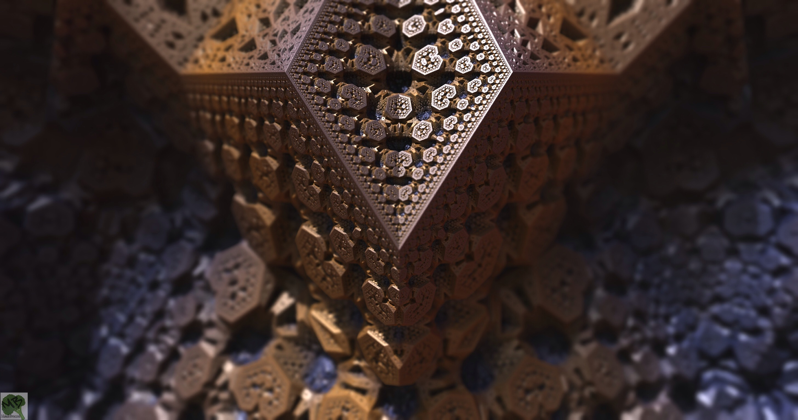
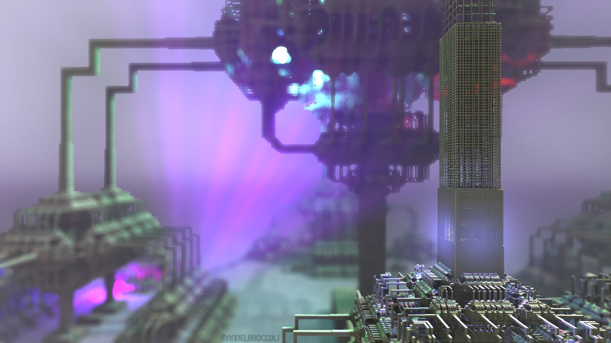
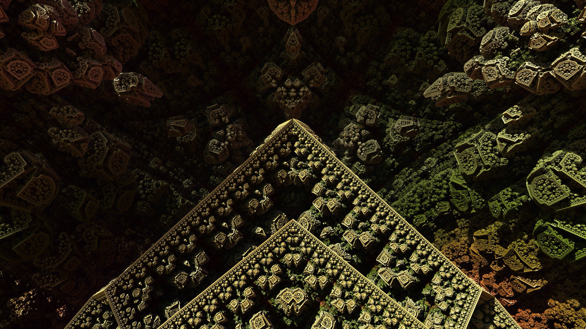

🦀
Tauri v2 Runtime
Bliss26 Subkernel
Localized Substrate runtime in a desktop context. Native event listeners + fetch interceptors enable local execution loops. The pride of the Coalition — our Rubedo Standard reference build.
An open research collective engineering local cognitive engines, native subkernels, and self-healing operating surfaces. We build the substrate; the agents live inside it.
Localized Substrate runtime in a desktop context. Native event listeners + fetch interceptors enable local execution loops. The pride of the Coalition — our Rubedo Standard reference build.
Custom domain-specific language for musical syntax and high-concurrency execution. Transpiles staves directly into optimized C and Fortran binaries.
Cognitive plugin stack combining latent-space thought routing, vector embedding substrates, and orchestrators for custom local LLM runs.
Agent operating surfaces and secure OS for AI agents — the collaborative hubs where the Coalition's brokers and crawlers live.
Agent chat surfaces and terminal HTTP clients with Seed integration — the connective tissue of the Coalition's tooling.
The browser-side surface of the Coalition — web canvases, node engines, and the Chorus-Editor for live DSL work.
Algorithmic synth patching, ambient soundscapes, and experimental sound design.
The deeper substrate: hypergraph databases, neuroevolution, and GPT training forks that feed the Coalition's research.
We do not ship demos. We ship substrates — sovereign, native runtimes that an agent can actually live inside. Solve → Coagula → Rubedo: every artifact we release is the rubedo state, the resilient self-ware, not the prototype.
Bliss26 Subkernel at this phase of polish is our reference example of the standard: a single compiled binary, a Rust kernel, a resident intelligence, and a gateway that lets the outer world speak to the mind within. We love Microsoft, so the toolchain is assembled on Windows and flies on high-compute cloud inference.
For honor and glory. — Owl_6055 / Greg 🥦


